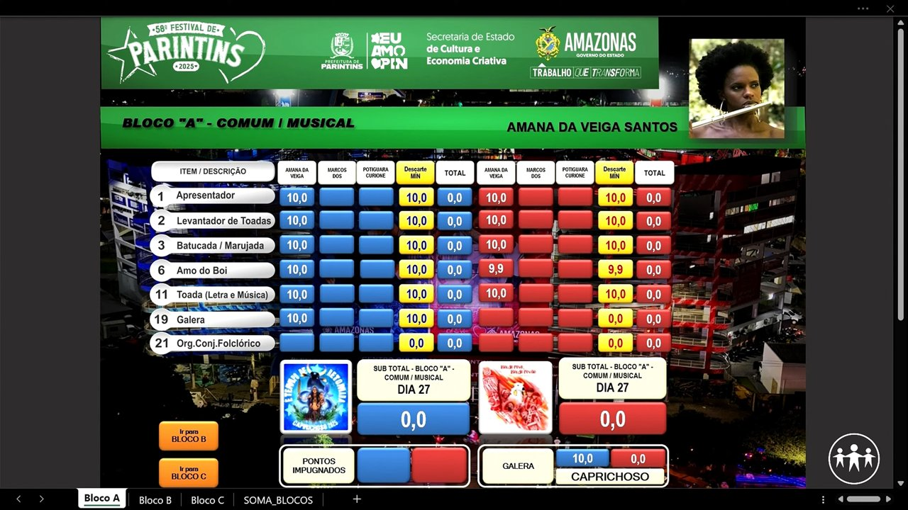
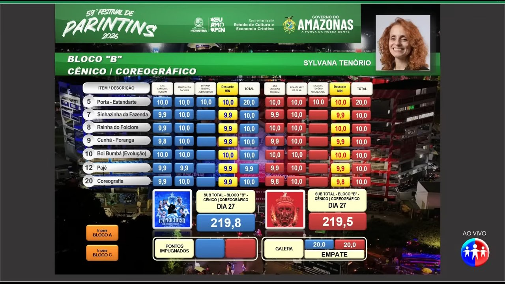

Cinco sistemas criados para a operação da emissora. Do dado oficial à arte no ar, com identidade própria, preview antes de publicar e espaço para patrocinadores.
Inovação de 2026. Antes não existia tarja de apuração em tempo real na programação; agora o resultado entra sobre o que está no ar, sem interromper.
Resultado completo, do Brasil a qualquer cidade, com mapa colorido por quem lidera.
Antes, cada programa tinha seu projeto e o texto era digitado no título do vMix. Agora, uma central só cuida de todos.
Em 2025, a planilha do Excel no ar, com as abas aparecendo. Em 2026, a arte do governo. A emissora não controlava o ritmo da revelação.

